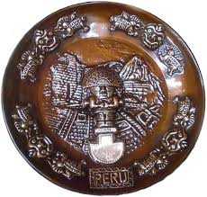

Decoratief wandbord met Tumi en Inca-symboliek
Peru, 20e eeuw

Dit ronde metalen wandbord toont centraal een tumi, het ceremoniële mes uit de Andes. De afbeelding van een priester of godheid met rijk gedecoreerde hoofdtooi verwijst naar rituelen en beeldtaal van de pre-Columbiaanse culturen in Peru.
Hoewel dit bord in de 20e eeuw is vervaardigd als decoratief souvenir, draagt het een diepe symboliek. De tumi stond in de Moche- en Inca-tijd symbool voor macht, genezing en verbinding met het goddelijke. De versierde rand met herhalende reliëfpatronen benadrukt de spirituele rijkdom.